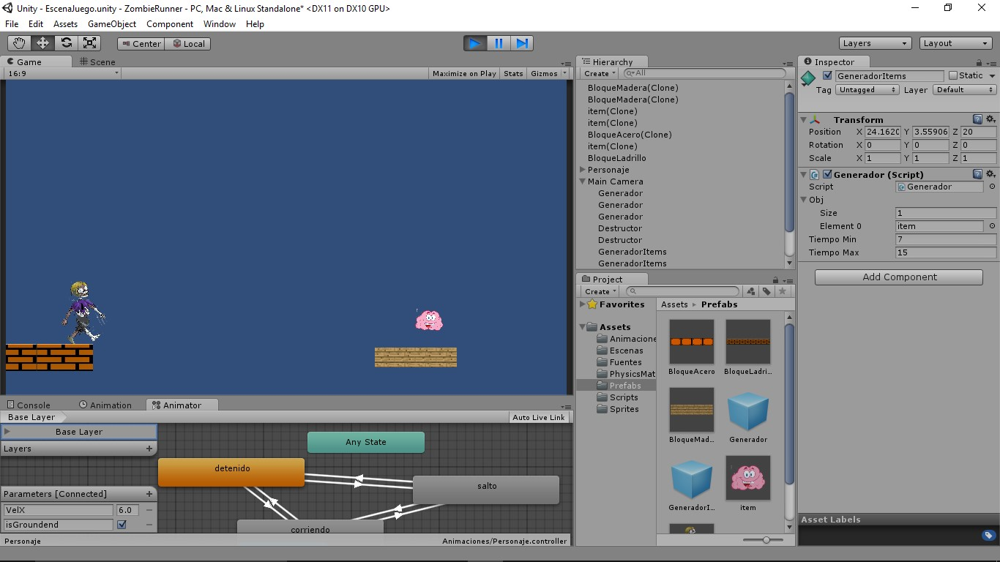
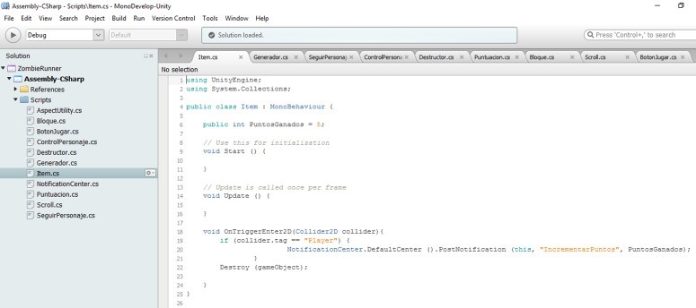

Desarrrollo
Lo primero que se realizó fue preparar el entorno, se configuró la escena para que siempre mantenga la resolución de 16:9. Se siguió con la creación del personaje que en este caso es un zombi al cual se le agregaran las animaciones de correr y saltar. La primera animación que se creó fue la de estar quieto ya que se pretende que comience el juego estando quieto. La siguiente animación que se realizó fue la de correr, esta animación se observa cuando el personaje pasa de estar quieto a correr. La siguiente animación fue la de salto, cada vez que se toca en la pantalla se muestra esta animación. Una vez que se llevaron a cabo las animaciones se agregaron los bloques en los cuales el personaje debe saltar, son tres niveles en los que encuentran los bloques, podemos observar como el personaje interactúa con los bloques, también se observa en esta misma imagen en la parte de abajo las transiciones entre las animaciones. Se agregaron ítems que personaje debe recolectar para ganar puntos extras que para el juego son cerebros, por a cada uno que recolecta se le suman 5 puntos a su puntuación. Lo siguiente fue crear la pantalla de portada, este es una nueva escena recordemos que Unity trabaja más con escenas, también el título del juego con un botón que dice “comenzar” que al oprimirlo nos manda a la escena del juego.
Marco de Trabajo
Se muestran a continuación algunas de las tecnologías usadas en el desarrollo del proyecto.
Tecnologias Usadas:
- Unity:
En Unity se desarrollan juegos en 3D pero también se pueden desarrollar en 2D que fue nuestro caso ya que el juego es en 2D, se trabajó con dos escenas por lo cual podría decirse que es un juego sencillo ya que Unity puede trabajar con mucho mas escenas que solo dos.
 - MonoDeveloper:
MonoDevelop es un entorno de desarrollo integrado libre y gratuito, Los scripts que se utilizaron para el comportamiento de los objetos se escribieron en el lenguaje C#, utilizando la herramienta que Unity trae predeterminada Monodevelop, usando el lenguaje C#.

Ejemplo de Codigo
En Unity generalmente se trabajó con el lenguaje de C#, a continuación se muestra un ejemplo de código.
using UnityEngine;
using System.Collections;
public class Item : MonoBehavier {
void start(){}
void OnTriggerEnter2D(Collider2D collider){
if(collider.tag == "Player") {
NotificationCenter.DefaultCenter ().PostNotification(this, "IncrementarPuntos", PuntosGanados);
}
Destroy (gameObject);
}
}
Video de Ejemplo
En el siguiente video se muestra un ejemplo de la aplicación en funcionamiento.